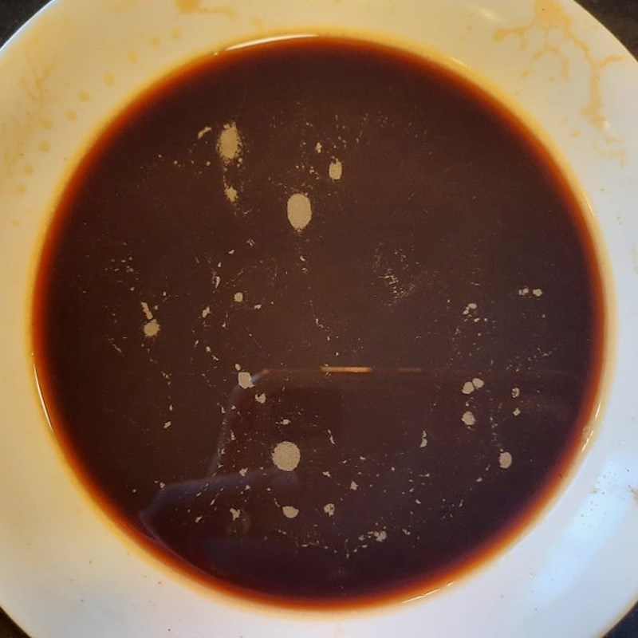
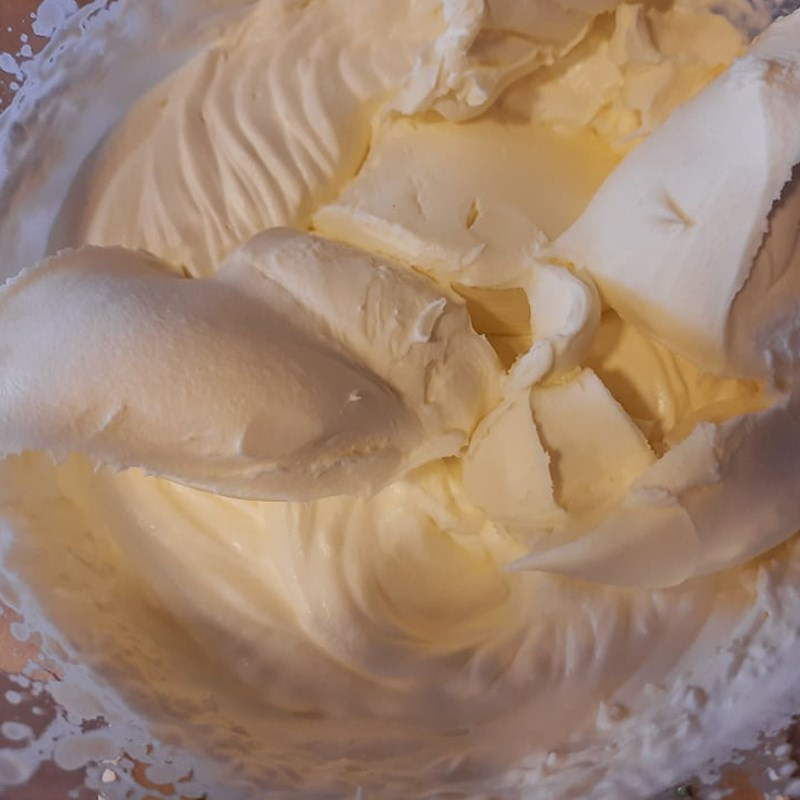
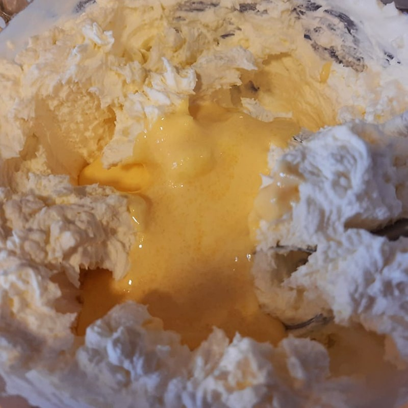
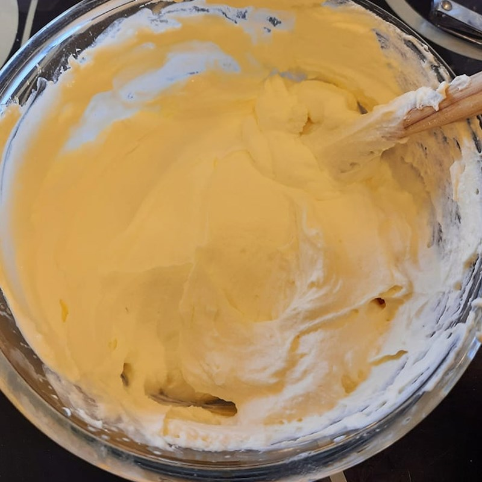
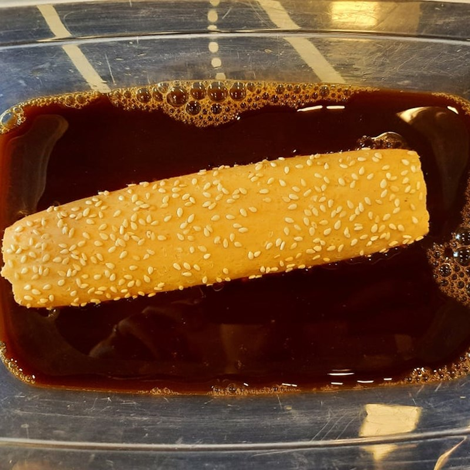
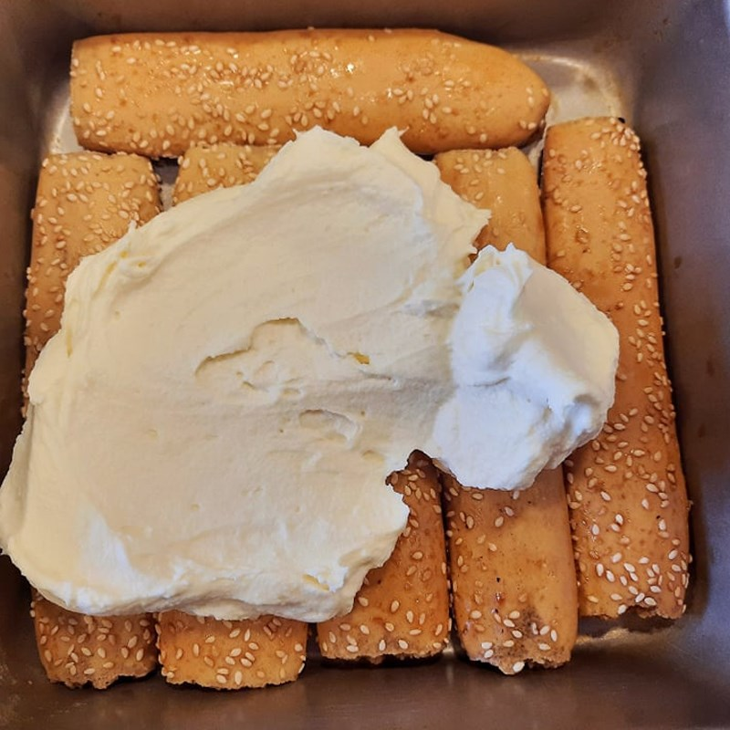
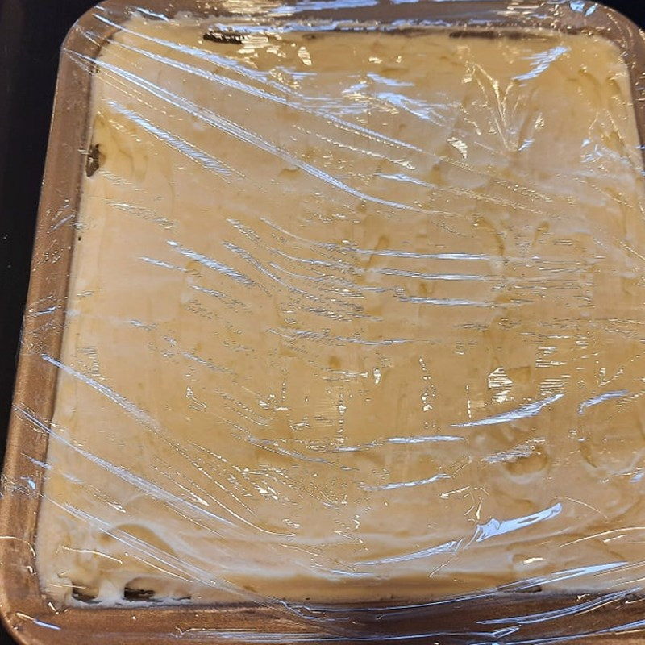
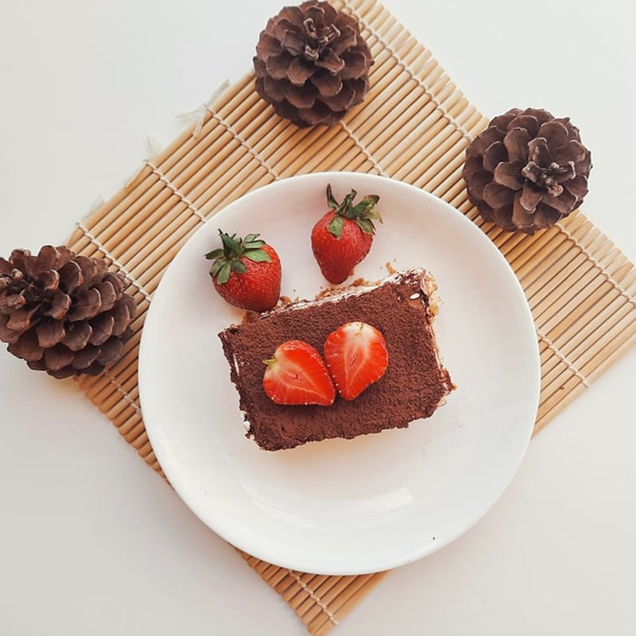

Đầu tiên, bạn hòa tan 1 muỗng cà phê bột cà phê cùng 20gr đường và 200ml nước nóng, sau đó để nguội.
Kế đến, cho vào tô mới 2 lòng đỏ trứng gà, 60gr đường, 1 muỗng cà phê đường vani. Sau đó, đặt tô này lên 1 nồi nước ấm rồi dùng máy đánh trứng đánh hỗn hợp đến khi chuyển thành màu vàng nhạt là được.
Cho vào tô mới 250ml whipping cream, dùng máy đánh trứng đánh hỗn hợp ở tốc độ trung bình đến khi kem bông mềm, tạo vân rõ nét, nhấc phới tạo chóp đứng nhưng oặt xuống là đạt.
Kế đến, cho 300gr phô mai Mascarpone vào tô whipping cream đã đánh bông, sau đó tiếp tục dùng máy trộn đều hỗn hợp ở tốc độ thấp.
Tiếp theo, cho vào thêm hỗn hợp trứng rồi dùng phới trộn nhẹ nhàng đến khi hỗn hợp hòa quyện, mịn mượt.
  Chuẩn bị 1 cái hộp vuông hoặc hình chữ nhật.
Kế tiếp, nhanh tay nhúng bánh Fingers lady vào chén cà phê đã hòa tan rồi xếp vào khay.
Tiếp theo, dàn đều lên trên 1 lớp sốt kem tiramisu. Lặp lại 2 lớp phủ này đến khi đầy hộp và kết thúc bằng 1 lớp sốt kem là hoàn tất.
Cuối cùng, dùng màng bọc thực phẩm bọc kín hộp bánh lại và cho vào ngăn mát tủ lạnh từ 4 - 6 tiếng hoặc để qua đêm.
  Khi lấy bánh từ ngăn mát tủ lạnh ra, bạn chỉ cần phủ lên mặt 1 lớp bột cacao là có thể thưởng thức.
Từng thìa bánh tiramisu mềm mịn, bùi bùi hòa quyện cùng vị đắng giữa lớp bột cacao và cà phê hòa tan. Đặc biệt hơn hết đó chính là lớp sốt kem phô mai beo béo, ngọt ngào, đem đến một hương vị cực kỳ hấp dẫn.
